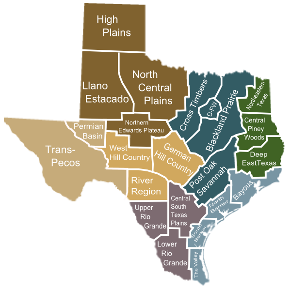

About Texas
Texas became the 28th state of the United States of America in 1845. It is the second-largest state in the country by area, with Alaska being the largest. Three Texas cities - Houston, San Antonio and Dallas - rank among the ten most populous cities in the United States. Austin is the state capital. ("Texas," 2024)
Geography
Texas can be divided into seven regions and twenty-three sub-regions, Each with their own unique geographical characteristics.
, via Wikimedia Commons" alt="diagram of the twenty-three subregions of Texas">Regions and Subregions
- Panhandle Plains
- High Plains
- Llano Estacado
- North Central Plains
- Northern Edwards Plateau
- Prairies and Lakes
- Cross Timbers
- DFW
- Blackland Prairie
- Post Oak Savannah
- Piney Woods
- Northwestern Texas
- Central Piney Woods
- Deep East Texas
- Gulf Coast
- Bayous
- North Barrier
- South Barrier
- The Valley
- South Texas Plains
- Central South Texas Plains
- Upper Rio Grande
- Lower Rio Grande
- Hill Country
- West Hill Country
- German Hill Country
- River Region
- Big Bend Country
- Trans-Pecos
- Permian Basin